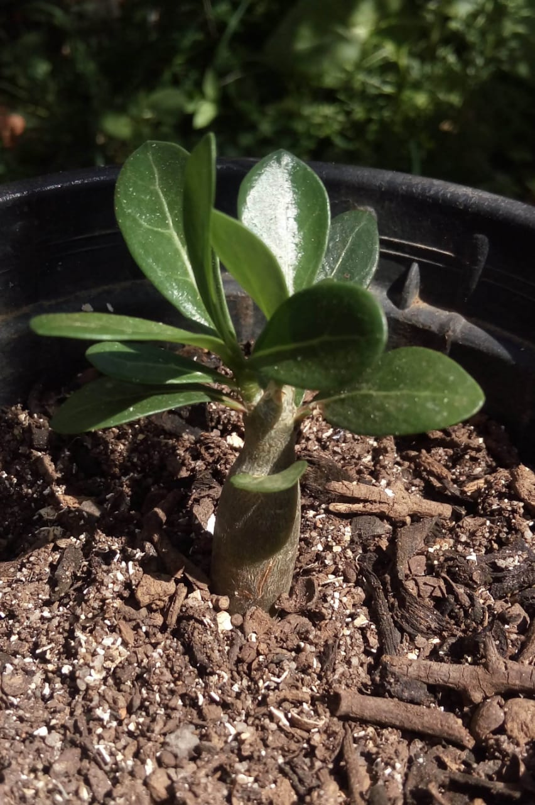
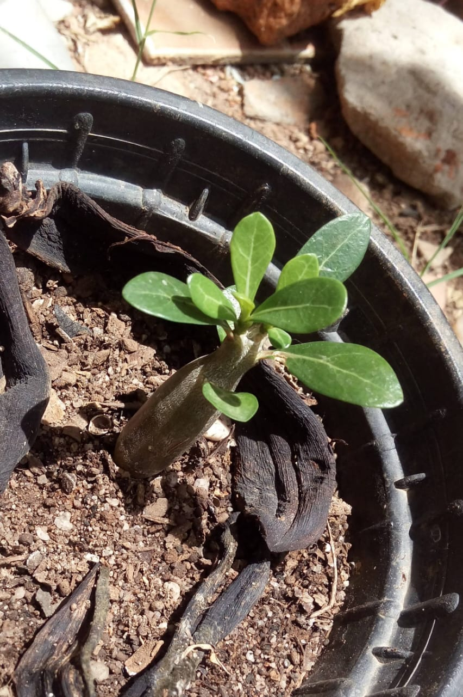
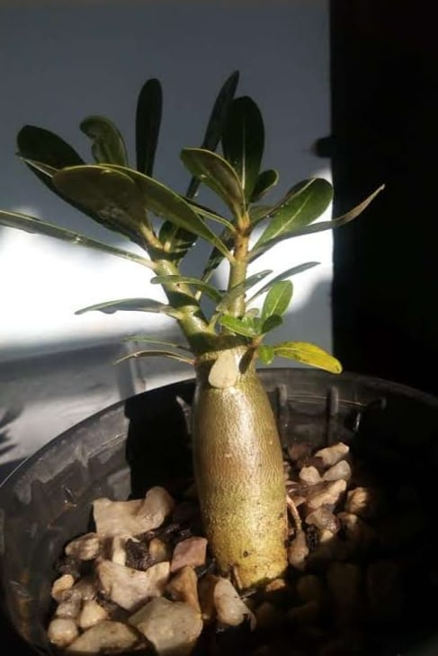

Minhas plantas
Nessa página eu vou mostrar um pouco das minhas plantas e parte de suas histórias.
Tudo começou quando eu ganhei a minha primeira plantinha no ano de 2019, o que eu não sabia era que depois disso meu quintal iria ficar parecendo um botânico kkkkkkkkkk. Essas fotos logo abaixo estão mostrando várias fases dela, de quando ganhei até hoje. Atualmente ela não está muito desenvolvida, talvez por falta de cuidado ou por genética mesmo.



| MATÉRIA | PROFESSOR | ATIVIDADES |
|---|---|---|
| Prog. web | Stefani | 0 |
| BD | Rafael | 0 |